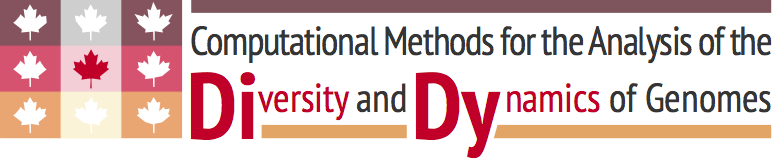

Welcome to Sparkhit.
Sparkhit is an open source distributed computing platform for analyzing large-scale genomic datasets. It is build on top of Apache Spark and Hadoop framework with an implementation of different bioinformatics tools and methods. Here you can parallelize your workload such as sequence mapping, genotyping, gene expressiong quantification and taxonomy profiling. You can also use your own tools without changing your code.
How it works
Sparkhit uses Spark RDD (resilient distributed dataset) to distribute genomic datasets: sequenced reads, mapped hits, genotype Alleles or expression data of genes or microbiomes. These datasets are, then, processed in parallel using MapReduce paradigm.
Read moreSetup cluster
A spark cluster is essential to scale-out (multiple computer nodes) sparkhit workloads. There are three tools at your disposal: Spark-ec2, BiBiGrid, EMR. Follow a tutorial to setup a small cluster on amazon cloud or local cluster.
Read more
Use your own tool
Sparkhit enables user to use their own tools without changing their code.
Command:
/usr/bin/sparkhit piper \
-cluster clusterConfiguration.txt \
-input /vol/human-microbiome-project/SRSXXXXX.tar.bz2 \
-tool /vol/sparkhit-home/package/mycode/myMappingScript.sh \
-toolparam " -input /dev/stdin -output /dev/stdout -refrence /vol/singlecell/genome.fa" \
-output /vol/mybucket/sparkhit/result
Support or Contact
Having trouble with Sparkhit? Check out our manual or contact support and we’ll help you sort it out.
Acknowledgement
We acknowledge all developers whose tools are used by sparkhit.
